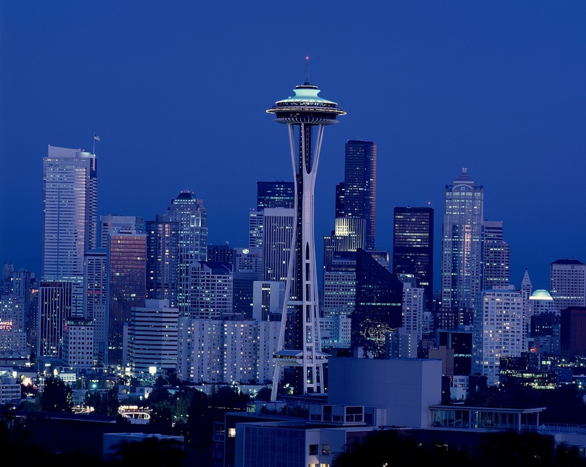

Return to title page
My Favorite Things
1. Favorite Sports Teams
NFL
MLB
NBA
CFB
Las Vegas Raiders
Seattle Mariners
San Antonio Spurs
Idaho Vandals
2. Favorite Cities
Seattle

San Antonio
New York City
3. Favorite Video Games
NBA 2K27
MLB The Show 26
EA SPORTS College Football 27